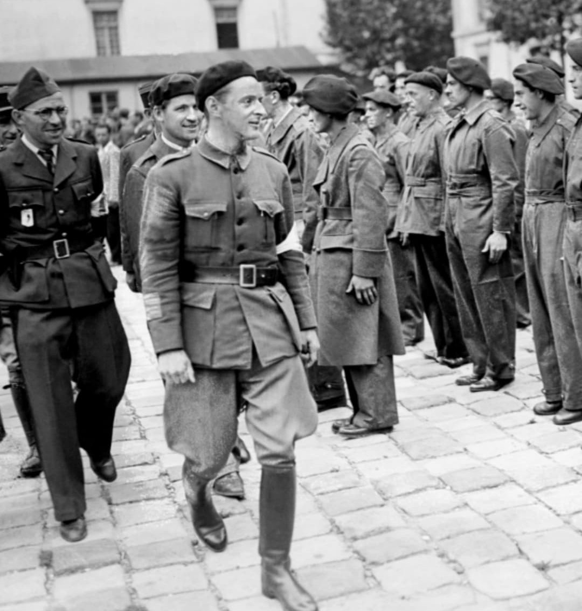

Nom : Henri Rol‑Tanguy
Naissance : 12 juin 1908
Décès : 8 septembre 2002
Nationalité : Française
Rôle : Chef des Forces Françaises de l’Intérieur (FFI) de Paris
Figure emblématique de la Résistance parisienne, Rol‑Tanguy dirige les FFI de la capitale. Ancien combattant des Brigades internationales en Espagne, il devient l’un des chefs militaires les plus importants de la Résistance intérieure.
Sous le nom de « Colonel Rol », il organise les réseaux armés, les sabotages, les transmissions et la préparation de l’insurrection. Son poste de commandement est installé dans un abri souterrain de Denfert‑Rochereau.
En août 1944, Rol‑Tanguy déclenche l’insurrection parisienne. Les FFI affrontent les forces allemandes, occupent les bâtiments administratifs et tiennent la ville jusqu’à l’arrivée de la 2e DB du général Leclerc.
Le 25 août 1944, Rol‑Tanguy participe à la signature de la reddition allemande à la préfecture de police. Son rôle est essentiel dans la libération de Paris et dans la coordination des forces résistantes.
Rol‑Tanguy reste l’un des symboles de la Résistance armée. Son nom est associé à l’insurrection parisienne, au courage clandestin et à la libération de la capitale.